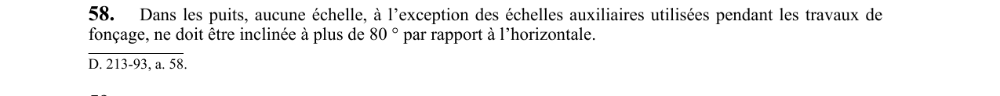

art-58-RSSM : inclinaison maximale échelles puits
Un article du wiki ⚖️ Recueil législatif
🌐 LegisQuébec · 📄 PDF officiel
Texte officiel : capture du PDF

🔗 Voir art. 58 RSSM dans le PDF (page 28)
Version : texte officiel du RSSM (RLRQ c. S-2.1, r. 14), à jour au 1er mai 2024 — Éditeur officiel du Québec
En bref
Dans les puits, aucune échelle ne peut être inclinée à plus de 80° par rapport à l'horizontale. Cette obligation vise l'employeur.
- Maximum 80° par rapport à l'horizontale.
- Exception : échelles auxiliaires de fonçage.
Voir aussi
- art. 56 : évacuation immédiate installation hors d'usage · obligation : lors des travaux de fonçage ou de développement, en l'absence de sortie de secours et si l'installation motorisée de transport de personnes est hors d'usage, toute personne sous terre doit être évacuée immédiatement, sauf le travailleur chargé de la réparer.
- art. 57 : cloison protectrice compartiment puits · obligation : le compartiment desservi par des échelles ou des escaliers doit être séparé des autres compartiments du puits par une cloison ou une grille protectrice pour éviter qu'on soit happé par le transporteur ou frappé par des roches ; depuis le 1er avril 1993.
- art. 59 : accès lieu travail puits · obligation : tout lieu de travail dans un puits doit être accessible par un escalier, une échelle rigide ou une installation motorisée de transport de personnes indépendante de la machine d'extraction ; lors du fonçage.
- art. 60 : paliers repos voies inclinées souterraines · obligation : dans une voie de circulation souterraine inclinée à 50° ou plus par rapport à l'horizontale, des paliers de repos couvrant le compartiment desservi par échelles doivent être installés à des distances verticales ne dépassant pas 7 m, avec des ouvertures d'au plus 1 m².
- ⚖️ Loi habilitante : LSST
- ↑ Index du bloc : Aménagement du chantier
Pages qui pointent ici (5)
- art-56-RSSM, évacuation immédiate installation hors d'usage Recueil législatif
- art-57-RSSM, cloison protectrice compartiment puits Recueil législatif
- art-59-RSSM, accès lieu travail puits Recueil législatif
- art-60-RSSM, paliers repos voies inclinées souterraines Recueil législatif
- RSSM - Aménagement du chantier (art. 12-99) Recueil législatif